A city full of surprises
Welcome to Warsaw!
Whether you’re visiting for a weekend
or planning a longer stay, there’s plenty to explore.
Wander through lively neighborhoods, admire beautiful
architecture, and find your own favorite corner of the city.
I've been to Warsaw 6 or 7 times (but who’s counting?) and
I still enjoy the city just as much as I did on my first visit.
Sightseeing
Explore the heart of Warsaw
Start your journey in Warsaw’s Old Town, where colorful
buildings and cobblestone streets surround the lively
Market Square. Visit the Royal Castle, then walk along the
Royal Route to discover elegant palaces, churches, and monuments.
For a different perspective, head to the observation terrace
at the Palace of Culture and Science.
The Palace looks
spectacular in every season, especially when it’s lit up in the evening.
I already have a whole collection of photos of it, and I’ll never
get tired of taking more.
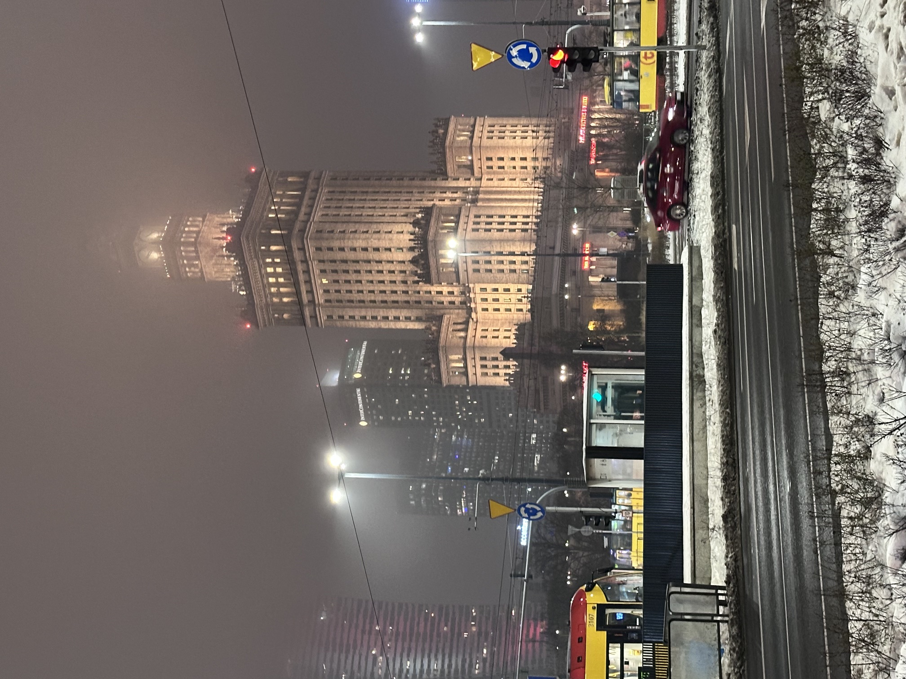
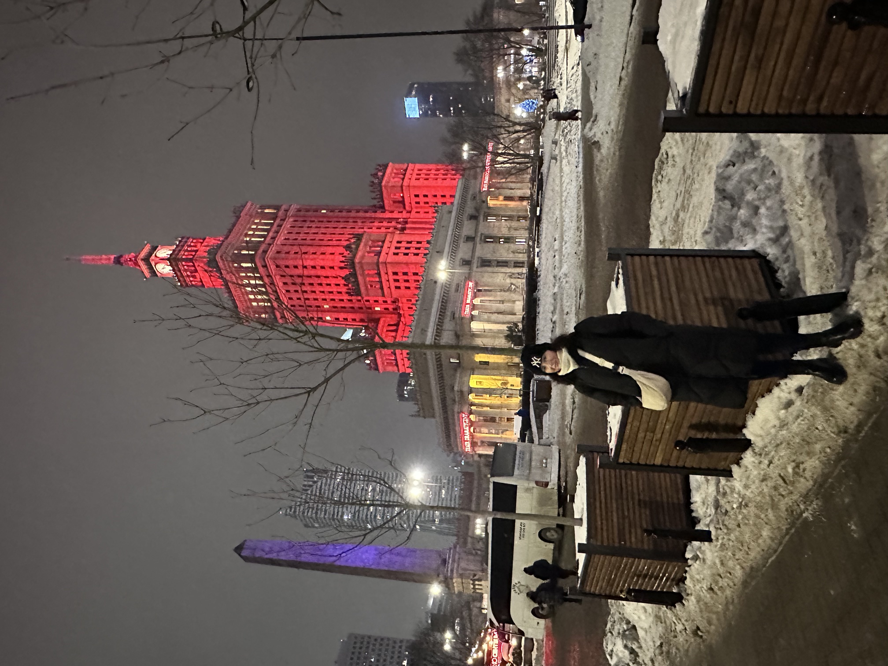
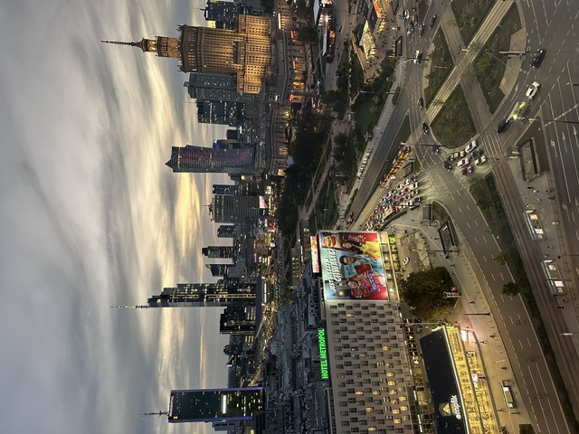
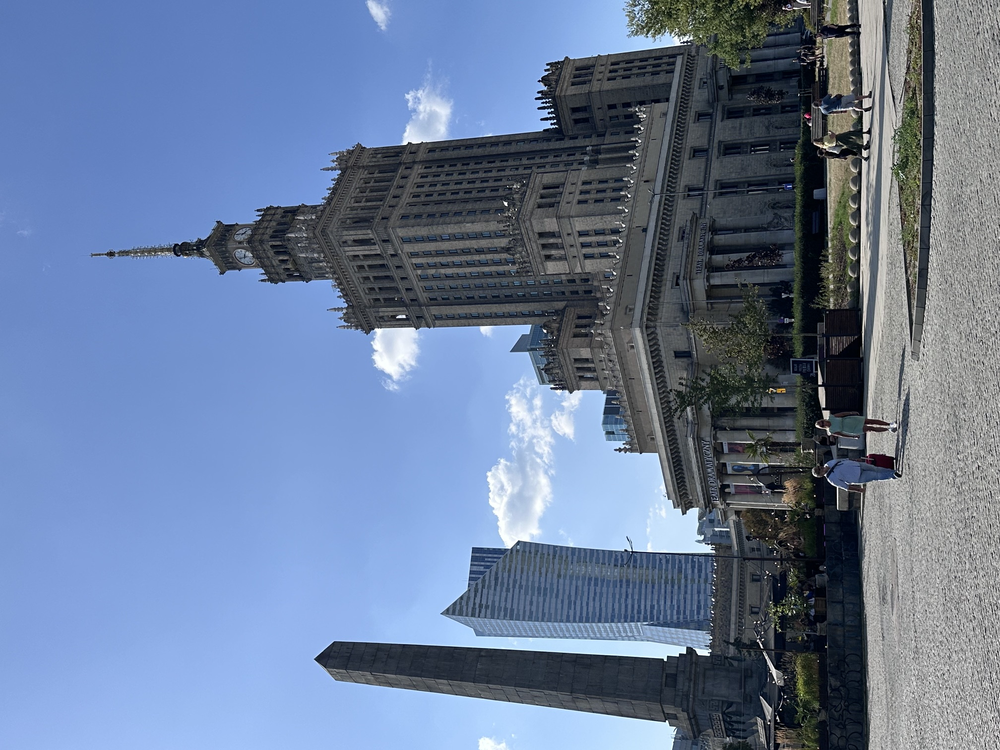
Parks & walks
Walking through Warsaw
Warsaw is a great city to explore on foot, whether
you’re looking for a peaceful park or a lively
neighborhood. Łazienki Park is a favorite for its
gardens, historic buildings, and the beautiful
Palace on the Isle.
You can also stroll along the
Vistula River, where walking and cycling paths offer
a different view of the city.
I took the idea of “going for a walk” a little too far...
What started as an easy stroll to the Vistula River
turned into a five-hour walk through Praga, one of the
city’s most interesting neighborhoods, known for its
graffiti. It was a wonderful opportunity to discover
street art, get a feel for the rhythm of local life,
and explore the neighborhood’s hidden corners.
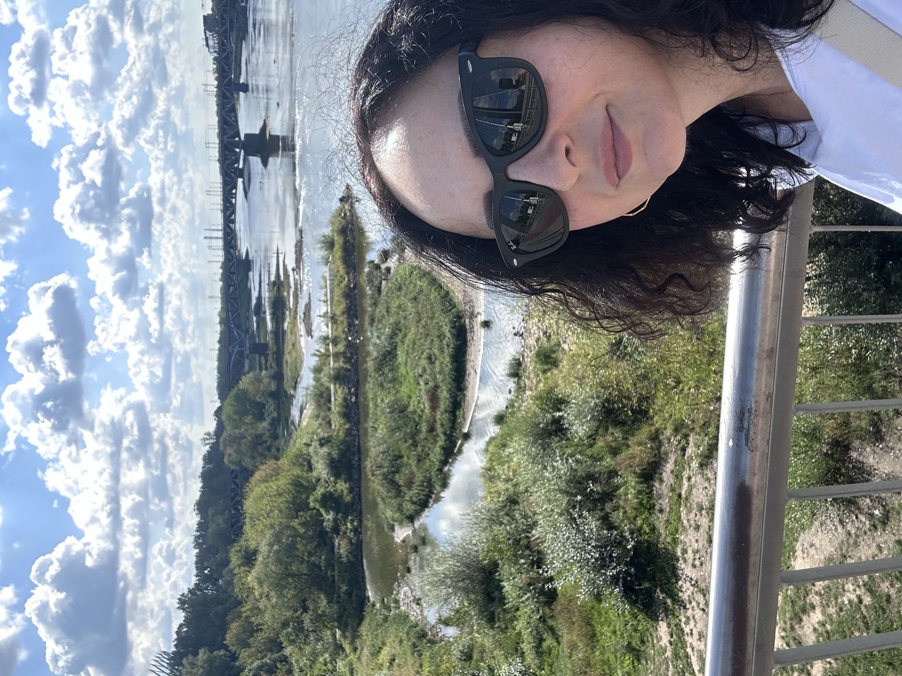
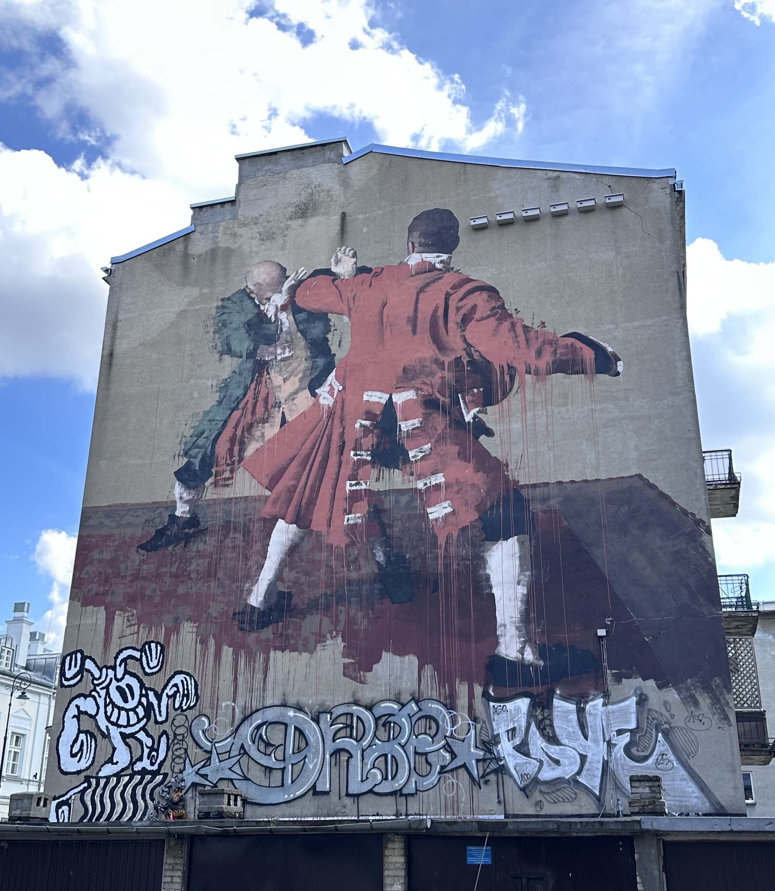
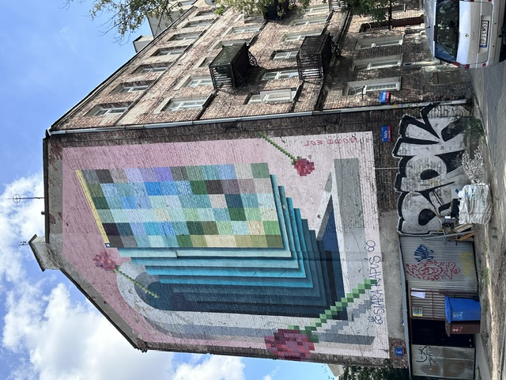
Shopping
Find something special
Whether you’re looking for fashion, souvenirs, or Polish
design, Warsaw has plenty of shopping options.
Explore the shops along Nowy Świat and Chmielna streets,
or visit a shopping center such as Arkadia (let’s keep
the number of hours I spent there on my last visit a
secret...).
For something unique, look for independent
boutiques and local markets (look at those cute ducks in the shop I found on Chmielna Street!).
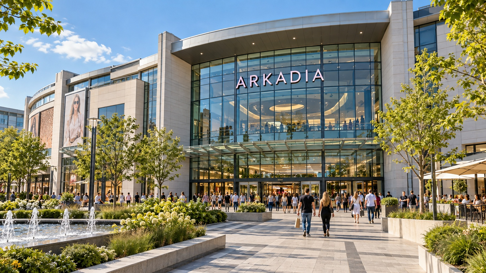
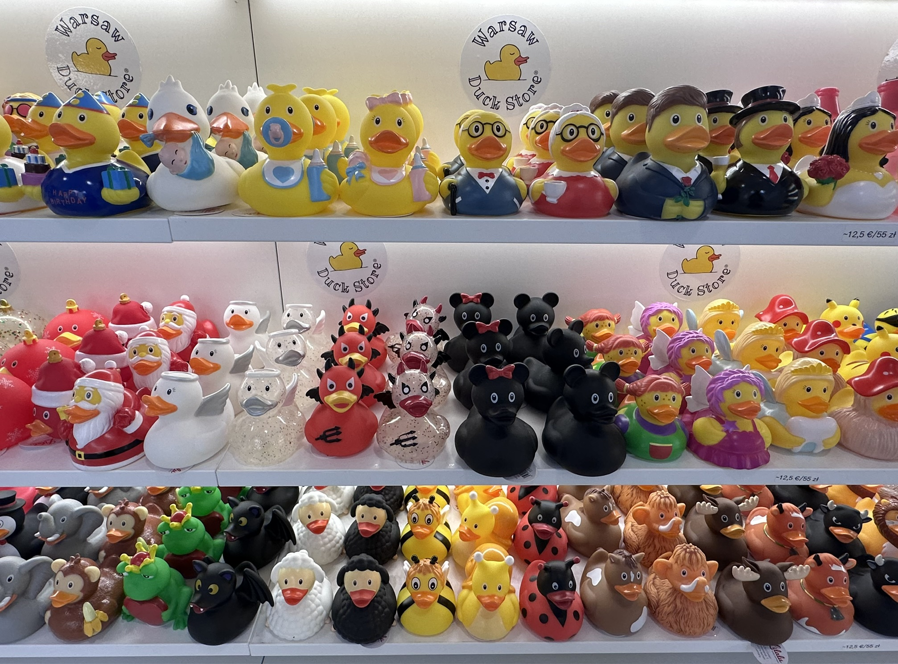
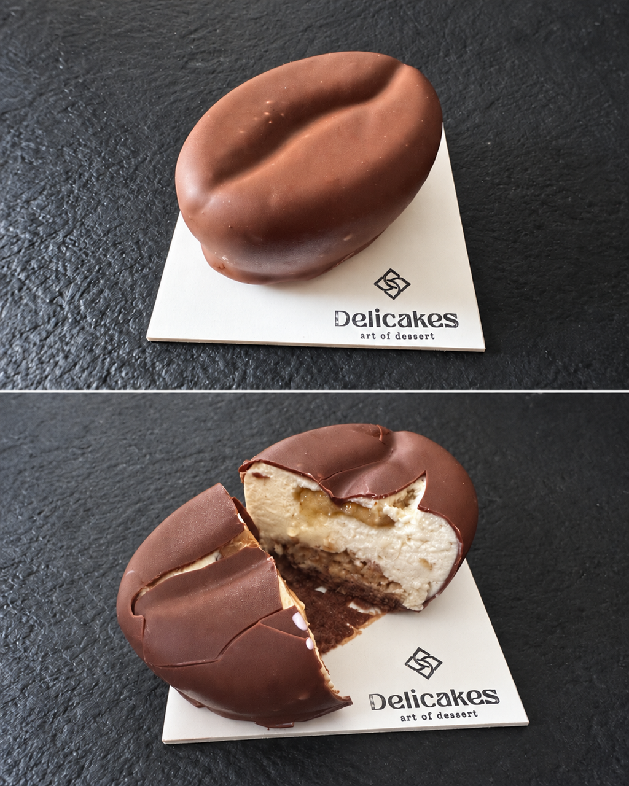
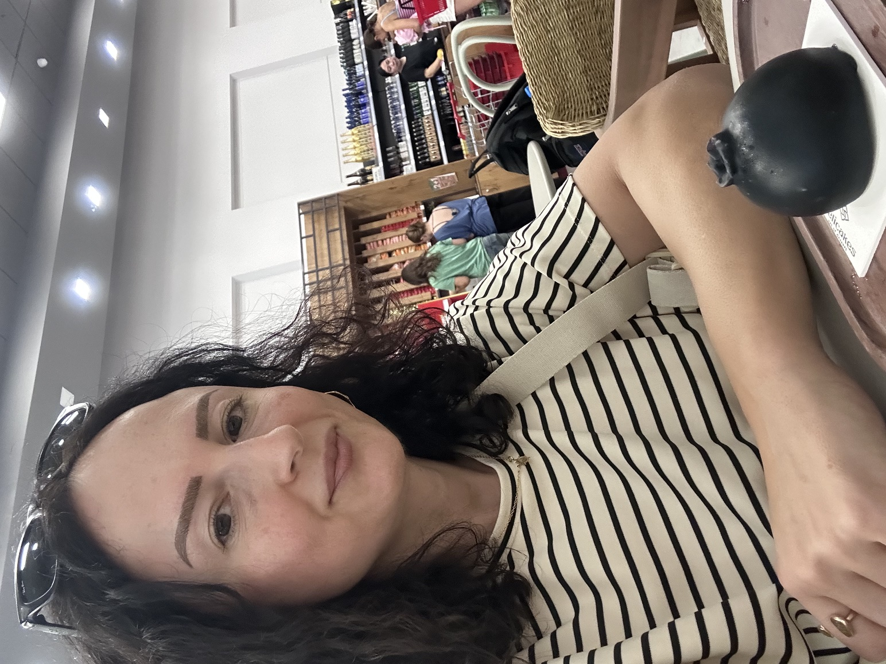
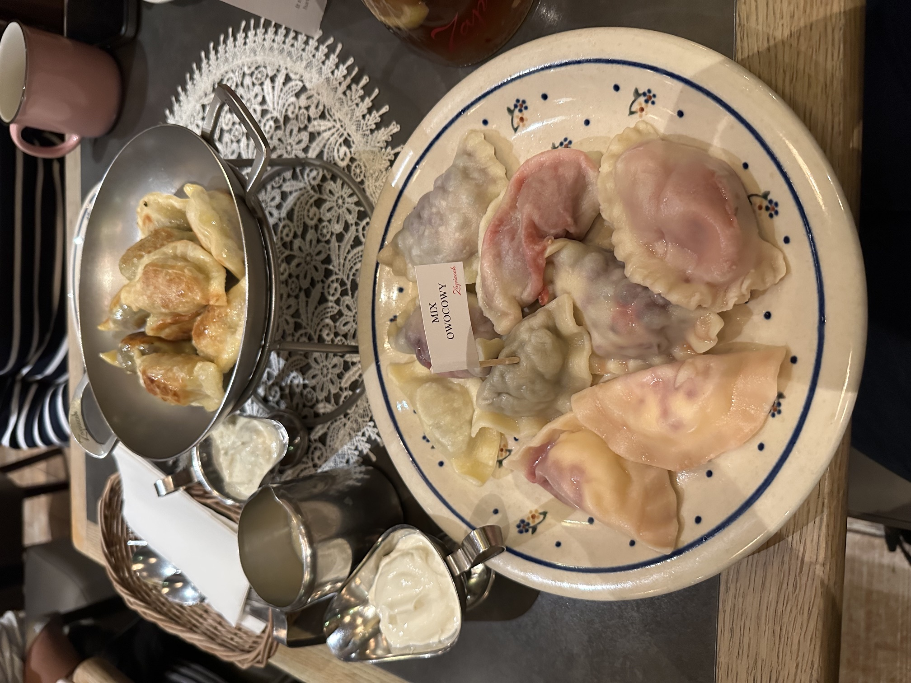
Food & drink
Taste your way through Warsaw
Warsaw’s food scene offers everything from traditional
Polish dishes to flavors from around the world.
For an affordable meal, visit a milk bar—a casual eatery
serving classic Polish comfort food. Try pierogi, żurek,
or a slice of Polish cheesecake at a local restaurant or
café. And of course, you can find many variations of
popular fruit desserts (monoporcje)! Personally, the blueberry one was my favorite...
For more information about Warsaw, visit here
A city to remember
See you in Warsaw!
Every time I return to Warsaw, I find another reason to love it—whether it’s a familiar
view, a new place to explore, or a delicious dessert. After six or seven visits,
the city still surprises me, and I’m already looking forward to discovering more on my next trip.
I hope my experiences inspire you to find your own favorite places in Warsaw!